Chapter 17 Point Pattern Analysis V
NOTE: The source files for this book are available with companion package {isdas}. The source files are in Rmarkdown format and packed as templates. These files allow you execute code within the notebook, so that you can work interactively with the notes.
In the last practice/session your learning objectives included:
- Learning about the \(\hat{F}\)- or empty space function.
- Considering the issue of patterns at multiple scales.
- Learning about the \(\hat{K}\)-function.
- Applying these techniques using a simple example.
Please review the previous practices if you need a refresher on these concepts.
If you wish to work interactively with this chapter you will need the following:
An R markdown notebook version of this document (the source file).
A package called
isdas.
17.1 Learning Objectives
In this chapter, you will:
- Revisit the concept of hypothesis testing
- Revisit the concept of null landscapes.
- Learn about the use of simulation for hypothesis testing.
- Learn to implement simulation envelopes
- Consider some caveats when working with point patterns
17.2 Suggested Readings
- Bailey TC and Gatrell AC (1995) Interactive Spatial Data Analysis, Chapter 3. Longman: Essex.
- Baddeley A, Rubak E, Turner R (2016) Spatial Point Pattern: Methodology and Applications with R, Chapter 10. CRC: Boca Raton.
- Bivand RS, Pebesma E, Gomez-Rubio V (2008) Applied Spatial Data Analysis with R, Chapter 7. Springer: New York.
- Brunsdon C and Comber L (2015) An Introduction to R for Spatial Analysis and Mapping, Chapter 6, 6.1 - 6.6. Sage: Los Angeles.
- O’Sullivan D and Unwin D (2010) Geographic Information Analysis, 2nd Edition, Chapter 5. John Wiley & Sons: New Jersey.
17.3 Preliminaries
As usual, it is good practice to clear the working space to make sure that you do not have extraneous items there when you begin your work. The command in R to clear the workspace is rm (for “remove”), followed by a list of items to be removed. To clear the workspace from all objects, do the following:
rm(list = ls())Note that ls() lists all objects currently on the workspace.
Load the libraries you will use in this activity:
library(isdas)
library(spatstat)
library(tidyverse)Load the datasets that you will use for this practice:
data("pp1_df")
data("pp2_df")
data("pp3_df")
data("pp4_df")
data("pp5_df")These five dataframes include the coordinates of events set in the space of a unit square. To convert these dataframes into ppp objects we first define a window:
W <- owin(c(0, 1), c(0, 1))And then use the function as.ppp to convert into ppp:
pp1.ppp <- as.ppp(pp1_df, W = W)
pp2.ppp <- as.ppp(pp2_df, W = W)
pp3.ppp <- as.ppp(pp3_df, W = W)
pp4.ppp <- as.ppp(pp4_df, W = W)
pp5.ppp <- as.ppp(pp5_df, W = W)17.4 Motivation: Hypothesis Testing
In the previous sessions you learned about density- and distance-based techniques for the analysis of spatial point patterns.
With the exception of the test of independence for quadrats, other techniques (including kernel density, the \(\hat{G}\)- and \(\hat{F}\)-functions, and the \(\hat{K}\)-function), did not have a formal hypothesis testing framework.
The question of “how confident are you when deciding whether a pattern is random” forms the basis of hypothesis testing. In other words, when making a decision whether the reject a null hypothesis, we would like to know what is the probability that we are making a mistake with the decision. Quantifying our uncertainty is a key feature of statistical analysis.
In statistics, tests of hypothesis are developed following these general steps:
- Identify a null hypothesis of interest, and if possible alternative hypotheses as well (although the latter is not always possible).
For instance, in point pattern analysis, a null hypothesis of interest is whether a pattern is random. If it is not, we would like to know in which way it is not random (i.e., is it clustered? Or on the contrary, is it regular?)
- Derive the expected value of the summary statistic of interest.
It the case of the \(\hat{G}\)-function, for instance, the expected value of the function under the null hypothesis of a spatially random Poisson process is: \[ G_{pois}(x) = 1 - exp(-\lambda \pi x^2). \]
Similar expressions were presented for the \(\hat{F}\)-function and \(\hat{K}\)-function, but not for kernel density estimates. When the expected value of the function is known, the closer the empirical function is to its expected value, the more likely it is that the null hypothesis is true.
For instance, the \(\hat{G}\)-function of the pattern in pp1.ppp is shown below. It is quite close to the theoretical function, so the pattern is probably random. The question is, how probable is this?
g_pp1 <- Gest(pp1.ppp, correction = "none")
plot(g_pp1)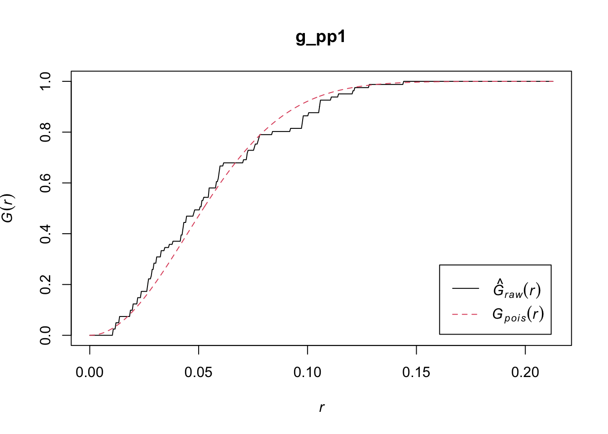
- To make a decision whether to reject the null hypothesis (or contrariwise, fail to reject it), we need to know how close is close to the expected value. This step depends on how much variability there is of the random process around its expected value. In other words, we need to know the variance of the expected value under the null hypothesis.
Unfortunately, the variance of the theoretical random processes is not known in the case of many spatial point pattern techniques (the quadrat-based test of independence is an exception.) For a long time, this meant that the techniques remained purely descriptive, and it was not possible to quantify uncertainty when trying to decide whether a pattern was random: the decision would remain purely subjective.
Fortunately, with the growth in use of computers in statistical analysis, the lack of theoretical expressions for the variance can be circumvented by means of simulation. Simulation has many applications in statistics, and is certainly relevant in the analysis of point patterns, allowing us to generate null landscapes with ease.
17.5 Null Landscapes Revisited
A null landscape is a landscape produced by a random process. In previous practices you saw various different ways of generating null landscapes. A useful way of generating null landscapes for point patterns is by means of a Poisson process. The package spatstat implements this by means of the function rpoisp. This function generates a null landscape given an intensity parameter and a window.
Before creating a null landscape, we can check the characteristics of the patterns in the dataset:
summary(pp1.ppp)## Planar point pattern: 81 points
## Average intensity 81 points per square unit
##
## Coordinates are given to 8 decimal places
##
## Window: rectangle = [0, 1] x [0, 1] units
## Window area = 1 square unitYou can verify that the intensity in every case is 81 points per square unit, and the window is a square unit.
Lets copy the window from one of the patterns in the sample dataset:
# We can use `$` to index an item in the object `pp1.ppp`
W <- pp1.ppp$windowIt is possible to generate a null landscape as follows, by means of the function rpoisppp(). The arguments of this function are a desired intensity (\(\lambda\)) and a window:
# The function `rpoisppp()` is used to generate null landscapes based on the Poisson distribution
sim1 <- rpoispp(lambda = 81, win = W)The value (i.e., output) of this function is a ppp object that can be analyzed in all the ways that you already know. For instance, you can plot it:
plot(sim1)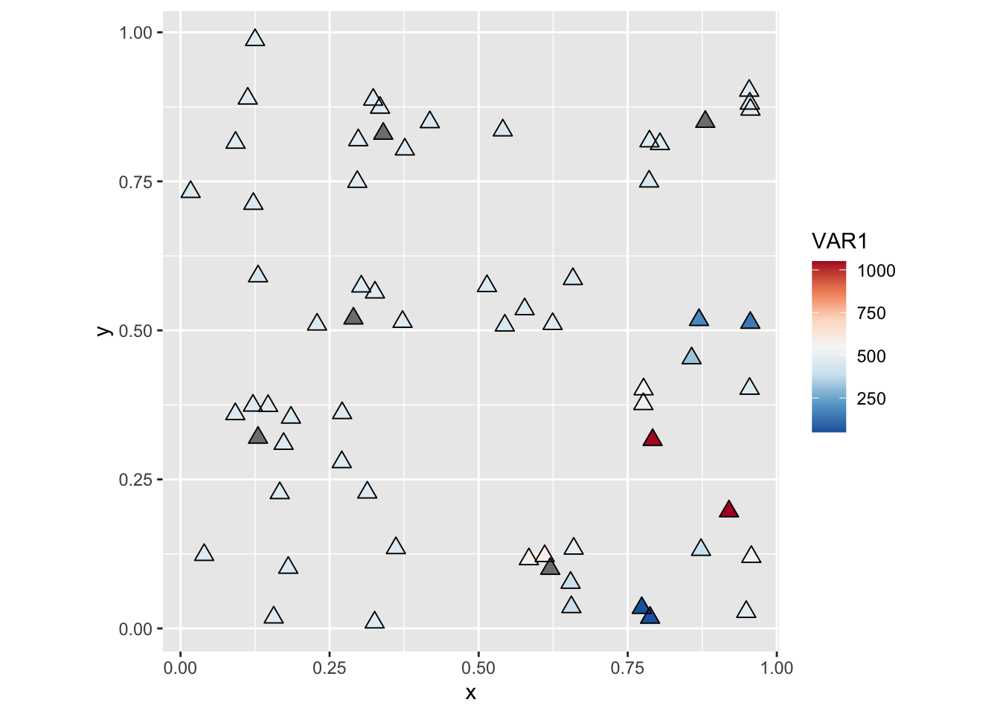
Importantly, you can apply any of the techniques that you have seen so far, for instance, the \(\hat{G}\)-function:
g_sim1 <- Gest(sim1,
correction = "none")We can try plotting the empirical functions (notice that the result of Gest is a dataframe with the values of r, the distance variable, the raw or empirical function, and the theoretical function). To plot using ggplot2 you can stack the two dataframes as follows (after adding a factor to indicate if it is the empirical function or a simulation):
# Use `data.frame()` to create a table with the relevant elements of the `g_pp1` object; in this example we take `raw` and put it in a column called `G`, we take `r` and put it in a column called `r` and create a new variable called `Type` to indicate that these values are for the "Empirical" function. Then we use `rbind()` to bind the rows of this data frame, and a second data frame that keeps the same columns, but based on the simulated null landscape
g_all <- data.frame(G = g_pp1$raw,
x = g_pp1$r,
Type = "Pattern 1")
g_all <- rbind(g_all,
data.frame(G = g_sim1$raw,
x = g_sim1$r,
Type = "Simulation"))We can use ggplot2 to create a plot of the two functions:
# By assigning `Type` to the aesthetic of `color` in `ggplot()`, we plot lines of different types in different colors
ggplot(data = g_all,
aes(x= x,
y = G,
color = Type)) +
geom_line()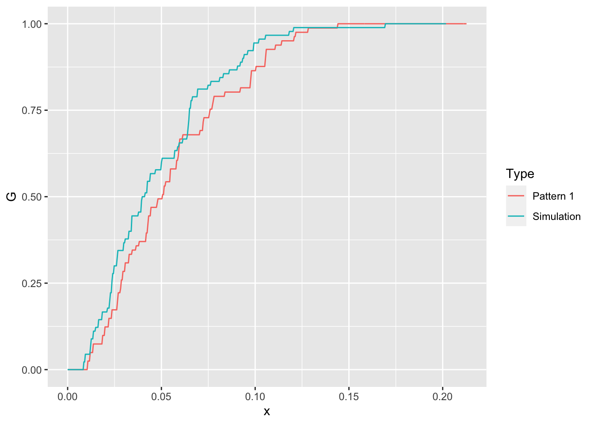
After seeing the plot above, we notice that the empirical function is very, very similar to the simulated null landscape. But is this purely a coincidence? After all, when we simulate a null landscape, there is the possibility, however improbable, that it will replicate some meaningful process purely by chance. To be sure, we can simulate and analyze a second null landscape:
sim2 <- rpoispp(lambda = 81, win = W)
g_sim2 <- Gest(sim2,
correction = "none")
g_all <- rbind(g_all,
data.frame(G = g_sim2$raw,
x = g_sim2$r,
Type = "Simulation"))Plot again:
ggplot(data = g_all,
aes(x= x,
y = G,
color = Type)) +
geom_line()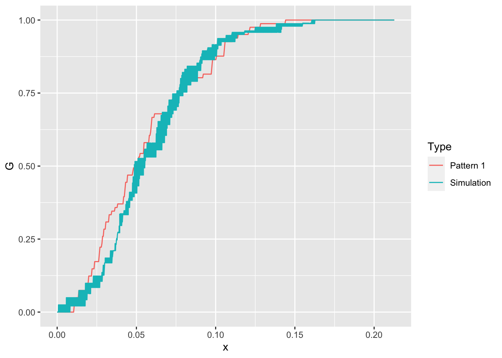
The empirical function continues to look very similar to the simulated null landscapes. We could simulate more null landscapes and increase our confidence that the empirical function indeed is similar to a null landscape (notice the use of a for loop to repeat the same instructions multiple times):
# Flow control functions include `for()`; this function will repeat the statements that follow a set number of times. In this example, we had already simulated 2 null landscapes above, so we want to simulate null landscapes 3 through 99
for(i in 3:99){
g_sim <- Gest(rpoispp(lambda = 81,
win = W),
correction = "none")
g_all <- rbind(g_all,
data.frame(G = g_sim$raw,
x = g_sim$r,
Type = "Simulation"))
}With this we have generated 99 distinct null landscapes. Try plotting the empirical function with the functions of all of these simulated landscapes:
ggplot(data = g_all,
aes(x= x,
y = G,
color = Type)) +
geom_line()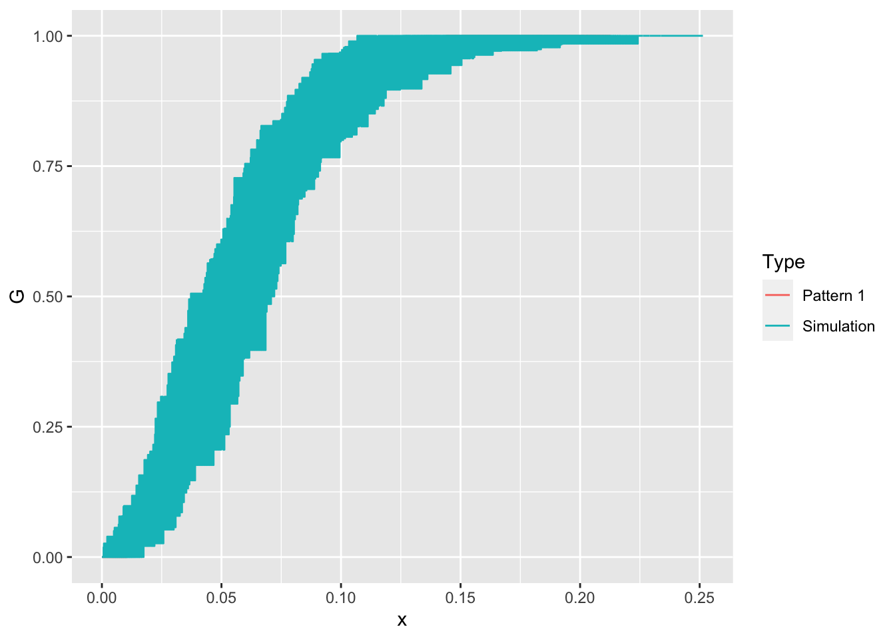
You can see in the plot above that the empirical function is actually not visible! It is obscured by the null landscapes, since it falls somewhere within the limits of the functions for all the simulated patterns. The interpretation of this is as follows: out of 100 patterns (the empirical pattern and 99 null landscapes), the empirical pattern is not noticeably different from the random ones. How confident would you be rejecting the null hypothesis, i.e., deciding that the empirical pattern is not random?
We can follow the same process but now for the second pattern pp2.ppp to the simulated null landscapes:
# Compute the G-function for the point pattern in `pp2.ppp` and then extract the value of G, the distance, and label it as an "Empirical" function in a new data frame (by means of `transmute()`)
g_pp2 <- Gest(pp2.ppp,
correction = "none")
g_pp2 <- data.frame(G = g_pp2$raw,
x = g_pp2$r,
Type = "Pattern 2")
# Bind the results of the G-function for `pp2.ppp` to the data frame with the simulations, and use `mutate()` to convert `Type` into a factor
g_all <- rbind(g_all,
g_pp2)
g_all <- mutate(g_all,
Type = factor(Type,
levels = c("Pattern 1",
"Pattern 2",
"Simulation")))
# Use filter to remove all observations associated with "Pattern 1"; in this case, Type not equal (i.e., `!=`) to "Pattern 1". This way we can plot only the G-function of "Pattern 2" and the simulations
ggplot(data = filter(g_all,
Type != "Pattern 1"),
aes(x= x,
y = G,
color = Type)) +
geom_line()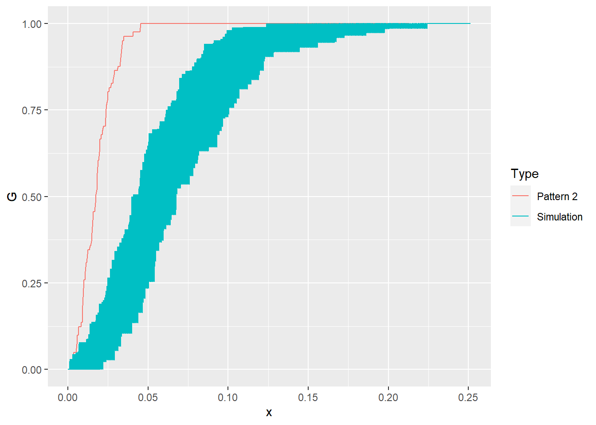
We can see that the empirical \(\hat{G}\)-function of pp2.ppp is quite distinct from the 99 null landscapes that we generated! How confident would you be rejecting the null hypothesis now?
17.6 Simulation Envelopes
Simulation, as seen above, can be quite powerful for hypothesis testing in situations where the theoretical parameters, for example the variance of a function, are not know. Essentially, the area covered by the \(\hat{G}\)-functions of the simulated landscapes above are an estimate of the variance of the function. The set of functions estimated on the null landscapes are used to obtain what we call simulation envelopes.
Since we lack a theoretical expression for the variance, we cannot obtain \(p\)-values to inform our decision to reject the null hypothesis. The simulation, however, provides a pseudo-\(p\)-value. If you generate 99 null landscapes, and the empirical pattern is still different, the probability that you are mistaken by rejecting the null hypothesis is at most 1% (since the next simulated landscape could expand the envelopes in such a way that it completely contains the empirical function).
As you saw above, using simulation for hypothesis testing is, in general terms, a relatively straightforward process (assuming that the null process is properly defined, etc.) The package spatstat includes a function, called envelope(), that can be used to generate simulation envelopes for several statistics used in point pattern analysis. For instance, for the \(\hat{G}\)-function, with 99 simulated landscapes:
# The function `envelope()` automates what we did above, simulating null landscapes; it takes as arguments a `ppp` object for the empirical pattern, a function that we desire to test, for example the function `Gest`, as well as the number of simulations that we wish to conduct. An additional argument `funargs = ` is used to pass other arguments to the function that is evaluated, i.e., in this example `Gest`
env_pp1 <- envelope(pp1.ppp,
Gest,
nsim = 99,
funargs = list(correction = "none"))## Generating 99 simulations of CSR ...
## 1, 2, 3, 4, 5, 6, 7, 8, 9, 10, 11, 12, 13, 14, 15, 16, 17, 18, 19, 20, 21, 22, 23, 24, 25, 26, 27, 28, 29, 30, 31, 32, 33, 34, 35, 36, 37, 38, 39, 40,
## 41, 42, 43, 44, 45, 46, 47, 48, 49, 50, 51, 52, 53, 54, 55, 56, 57, 58, 59, 60, 61, 62, 63, 64, 65, 66, 67, 68, 69, 70, 71, 72, 73, 74, 75, 76, 77, 78, 79, 80,
## 81, 82, 83, 84, 85, 86, 87, 88, 89, 90, 91, 92, 93, 94, 95, 96, 97, 98, 99.
##
## Done.The envelopes can be plotted:
plot(env_pp1)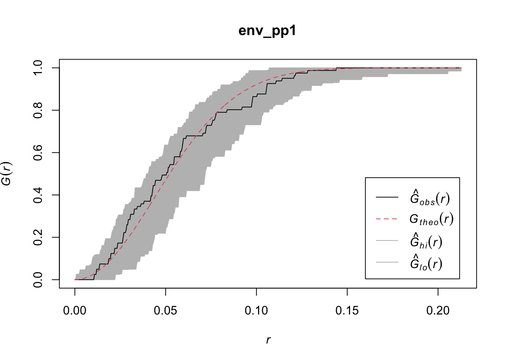
It is easy to see that in this case the empirical function falls within the simulation envelopes, and thus it is very unlikely to be different from the null landscapes.
Also, the \(\hat{F}\)-function:
env_pp2 <- envelope(pp2.ppp,
Fest,
nsim = 99,
funargs = list(correction = "none"))## Generating 99 simulations of CSR ...
## 1, 2, 3, 4, 5, 6, 7, 8, 9, 10, 11, 12, 13, 14, 15, 16, 17, 18, 19, 20, 21, 22, 23, 24, 25, 26, 27, 28, 29, 30, 31, 32, 33, 34, 35, 36, 37, 38, 39, 40,
## 41, 42, 43, 44, 45, 46, 47, 48, 49, 50, 51, 52, 53, 54, 55, 56, 57, 58, 59, 60, 61, 62, 63, 64, 65, 66, 67, 68, 69, 70, 71, 72, 73, 74, 75, 76, 77, 78, 79, 80,
## 81, 82, 83, 84, 85, 86, 87, 88, 89, 90, 91, 92, 93, 94, 95, 96, 97, 98, 99.
##
## Done.plot(env_pp2)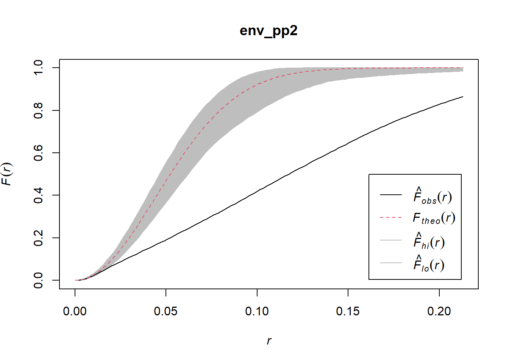
Now the empirical function lies well outside the simulation envelopes, which makes it very unlikely that it is similar to the null landscapes.
And finally, the \(\hat{K}\)-function:
env_pp3 <- envelope(pp3.ppp,
Kest,
nsim = 99,
funargs = list(correction = "none"))## Generating 99 simulations of CSR ...
## 1, 2, 3, 4, 5, 6, 7, 8, 9, 10, 11, 12, 13, 14, 15, 16, 17, 18, 19, 20, 21, 22, 23, 24, 25, 26, 27, 28, 29, 30, 31, 32, 33, 34, 35, 36, 37, 38, 39, 40,
## 41, 42, 43, 44, 45, 46, 47, 48, 49, 50, 51, 52, 53, 54, 55, 56, 57, 58, 59, 60, 61, 62, 63, 64, 65, 66, 67, 68, 69, 70, 71, 72, 73, 74, 75, 76, 77, 78, 79, 80,
## 81, 82, 83, 84, 85, 86, 87, 88, 89, 90, 91, 92, 93, 94, 95, 96, 97, 98, 99.
##
## Done.plot(env_pp3)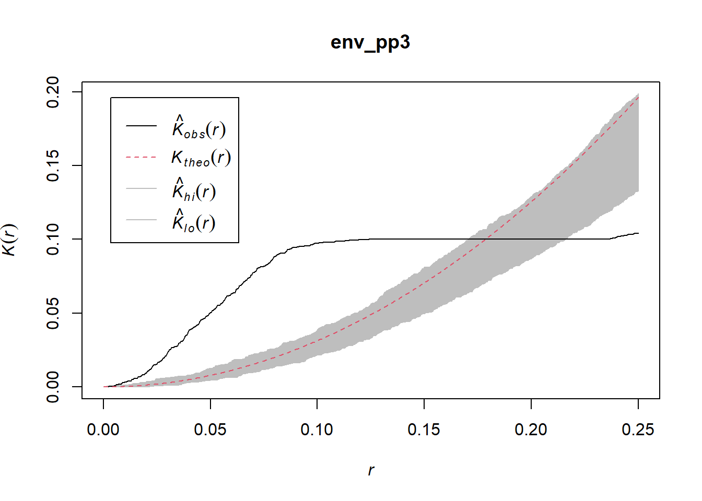
Again, the empirical function lies mostly outside of the simulation envelopes, meaning that it is very improbable that it represents a random process. Simulation envelopes are a powerful way to test the hypothesis of null landscapes in the case of spatial point patterns.
17.7 Things to Keep in Mind!
Before concluding the topic of point pattern analysis, here are a few important caveats to keep in mind.
17.7.1 Definition of a Region
When defining the region (or window) for the analysis, care must be taken that it is reasonable from the perspective of the process under analysis. Defining the region in an inappropriate way can easily lead to misleading results.
Consider for instance the first pattern in the dataset. This pattern was defined for a unit-square window. We can apply the \(\hat{K}\)-function to it:
k_env_pp1 <- envelope(pp1.ppp,
Kest,
nsim = 99,
funargs = list(correction = "none"))## Generating 99 simulations of CSR ...
## 1, 2, 3, 4, 5, 6, 7, 8, 9, 10, 11, 12, 13, 14, 15, 16, 17, 18, 19, 20, 21, 22, 23, 24, 25, 26, 27, 28, 29, 30, 31, 32, 33, 34, 35, 36, 37, 38, 39, 40,
## 41, 42, 43, 44, 45, 46, 47, 48, 49, 50, 51, 52, 53, 54, 55, 56, 57, 58, 59, 60, 61, 62, 63, 64, 65, 66, 67, 68, 69, 70, 71, 72, 73, 74, 75, 76, 77, 78, 79, 80,
## 81, 82, 83, 84, 85, 86, 87, 88, 89, 90, 91, 92, 93, 94, 95, 96, 97, 98, 99.
##
## Done.plot(k_env_pp1)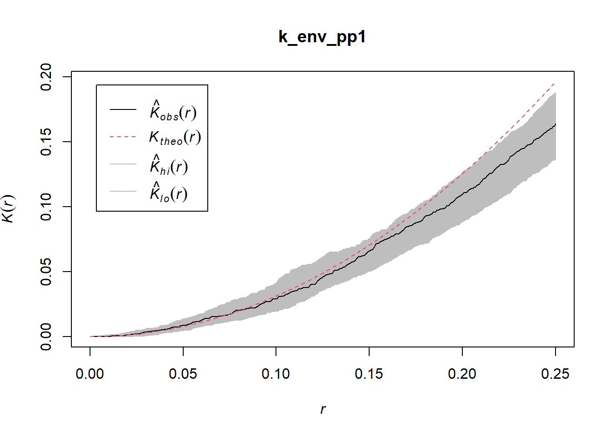
Based on this we would most likely conclude that the pattern is random.
But if we replace the unit-square window by a much larger window, as follows:
W2 <- owin(x = c(-2,4),
y = c(-2, 4))
pp1_reg2 <- as.ppp(as.data.frame(pp1.ppp),
W = W2)
plot(pp1_reg2)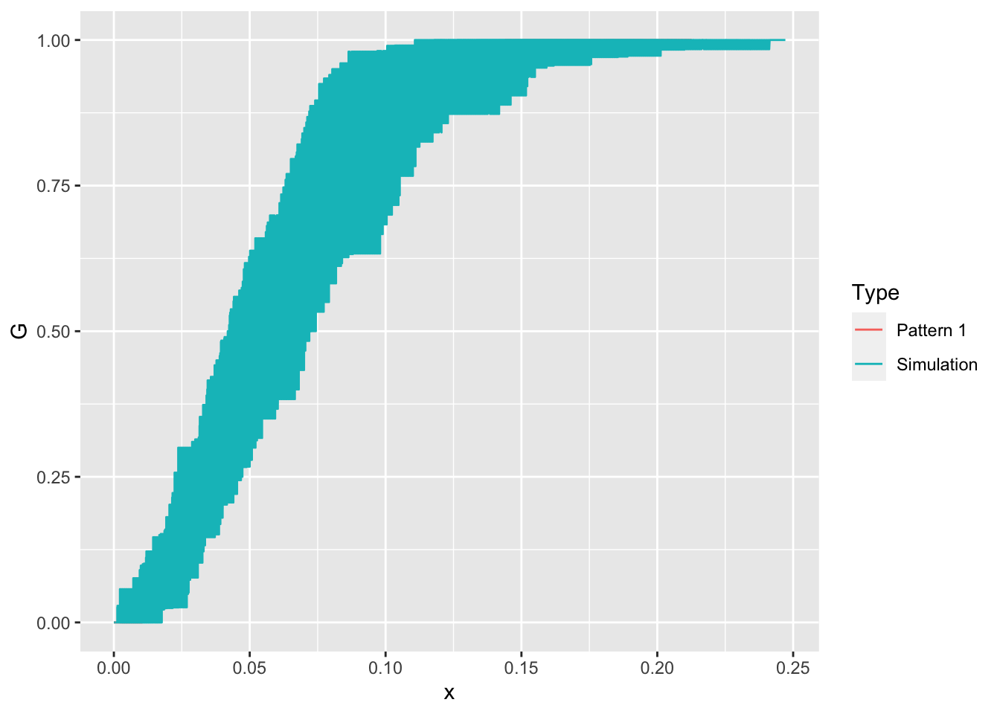
In the context of the larger window, the point pattern now looks clustered! See how the definition of the window would change your conclusions regarding the pattern:
k_env_pp1_reg2 <- envelope(pp1_reg2,
Kest,
nsim = 99,
funargs = list(correction = "none"))## Generating 99 simulations of CSR ...
## 1, 2, 3, 4, 5, 6, 7, 8, 9, 10, 11, 12, 13, 14, 15, 16, 17, 18, 19, 20, 21, 22, 23, 24, 25, 26, 27, 28, 29, 30, 31, 32, 33, 34, 35, 36, 37, 38, 39, 40,
## 41, 42, 43, 44, 45, 46, 47, 48, 49, 50, 51, 52, 53, 54, 55, 56, 57, 58, 59, 60, 61, 62, 63, 64, 65, 66, 67, 68, 69, 70, 71, 72, 73, 74, 75, 76, 77, 78, 79, 80,
## 81, 82, 83, 84, 85, 86, 87, 88, 89, 90, 91, 92, 93, 94, 95, 96, 97, 98, 99.
##
## Done.plot(k_env_pp1_reg2)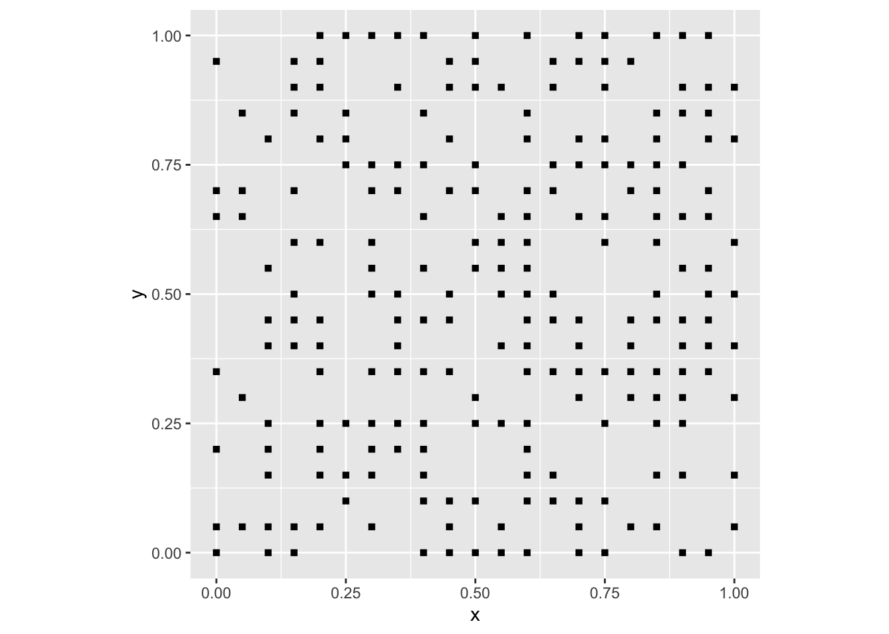
Care must be taken when defining the window/region for analysis to avoid spurious results.
17.7.2 Edge Effects
As discussed above, definition of the window (region) is critical. If at all possible, the region should be selected in such a way that it is consistent with the underlying process. This is not always possible, either because the underlying process is not known, or because of limitations in data collection capabilities.
When this is the case, it is necessary to define a boundary that does not correspond necessarily with the extent of the process of interest. For example, analysis of business locations in Toronto may be limited to the city limits. This does not mean that establishments do not exist beyond those boundaries. When the extent of the process exceeds the window used in the analysis, the point pattern is observed only partially, and it is possible that the omitted information regarding the location of events beyond the boundary may introduce some bias.
Consider the situation illustrated in Figure 17.1.

FIGURE 17.1: Edge effects
In the figure, the region is the rectangular window. Events are observed only inside the window, but events still exist beyond the edges of the window. It is straightforward to see how the empty space (\(\hat{F}\)-) function would be biased, since locations near the edge would appear the be more distant from an event than they actually are.
Several corrections are available in spatstat to deal with the possibility of edge effects. So far, we have used the argument correction = "none" when applying the functions. The following alternative corrections are implemented: “none”, “rs”, “km”, “cs” and “best”. Alternatively correction = "all" selects all options.
These corrections are variations of weighting schemes. In other words, the statistic is weighted to give an unbiased estimator. See:
plot(Gest(pp2.ppp,
correction = "all"))
The different corrections are plotted. It can be seen in this case that the corrections are relatively small, relative to the uncorrected empirical line; however, this is not always the case.
17.7.3 Sampled Point Patterns
Whereas edge effects can introduce bias by censoring the observations outside of the window/region, another issue emerges when not all events are observed inside the window.
We have assumed so far that any point pattern under analysis consists of a census of events, or in other words, that all relevant events have been recorded. A sampled point pattern, on the other hand, is a pattern where not all events have been recorded (see Figure 17.2).

FIGURE 17.2: Sampled point pattern
The bias introduced by sampled point patterns can be extremely serious, because the findings depend heavily of the observations that were recorded as well as those that were not recorded! Clustered events could easily give the impression of a dispersed pattern, depending on what was observed. Imagine for instance that the events are nests of birds. If the birds tend to nest in the thickest parts of the forest that observers cannot easily access, the “observed” pattern will depend crucially on the trails and other routes of access that the researcher can use.
There are no good solutions to bias introduced by sampled point patterns, and it is not recommended to use the techniques discussed here with sampled point patterns.
This concludes the topic of spatial point patterns.